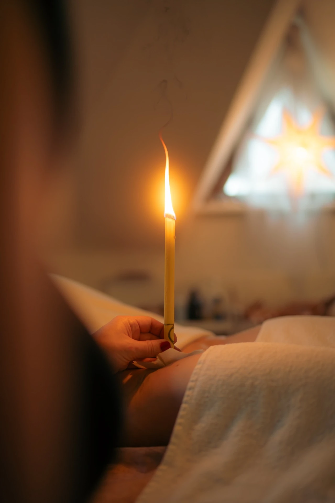

![Maderoterapie UH logo]()
Co jsou tělové svíce?

Tělové a ušní svíce jsou tradiční terapeutická metoda inspirovaná moudrostí starověkých kultur — Egypťanů, Tibetanů, Mayů i domorodých národů Severní Ameriky. Již před tisíci lety si lidé uvědomovali, že nemoci, bolesti a psychické potíže pramení z blokád v toku životní energie, a používali svíce jako nástroj pro obnovení přirozeného energetického toku.
Moderní svíce jsou vyrobeny z přírodních materiálů — bavlny, včelího vosku, kurkumy, esenciálních olejů a léčivých bylin. Unikátní tvar svíce a její složení umožňují vytvoření tzv. komínového efektu — teplo jemně měkčí nahromaděné usazeniny a toxiny, zatímco podtlak uvnitř svíce je „vytahuje" ven. Současně se uvolňují energetické bloky a aktivuje se lymfatický systém.
V našem studiu nabízíme celé spektrum svící — klasické tělové a ušní, bylinné, esenciální, čakrové i minerální s ametytem nebo růženínem. Každý typ má specifické vlastnosti a využití. Na základě konzultace vybereme ty nejvhodnější pro vaše potřeby.
Přínosy procedury
Co procedura přináší?
- Detoxikace a čištění organismuKomínový efekt svíce vytahuje toxiny a usazeniny z tkání. Teplo proniká do hlubokých tkání a uvolňuje nahromaděné škodlivé látky. Výsledkem je pocit čistoty, lehkosti a celkové svěžesti.
- Úleva od bolesti zad a kloubůAplikace svícemi na záda, bederní oblast nebo klouby přináší výraznou úlevu od chronických bolestí. Teplo uvolňuje ztuhlé svaly, snižuje zánět a podporuje přirozené hojení.
- Podpora dýchání a uvolnění dutinUšní svíce jsou zvláště účinné při bolestech hlavy způsobených přeplněnými dutinami, migrénách a hučení v uších. Teplo a podtlak pomáhají uvolnit přetlak a zlepšit odtok sekretu.
- Harmonizace energetického systémuČakrové svíce jsou naladěny na specifické energetické frekvence jednotlivých čaker. Jejich aplikací se harmonizují energetická centra těla, uvolňují se bloky a obnovuje se přirozený tok vitální energie.
- Hluboká relaxace a zklidnění mysliKombinace tepla, jemné vůně bylin a esenciálních olejů navozuje stav hluboké relaxace. Svíce výrazně snižují úzkost, stres a napětí — a to jak fyzické, tak psychické.
Druhy svící a jejich využití

Klasické tělové a ušní svíce — universální typ vhodný pro začátečníky. Obsahují včelí vosk a bavlnu, jejich účinek je jemný a vyvážený. Ideální pro první zkušenost se svícemi nebo pro pravidelnou relaxační péči.
Bylinné svíce — obohaceny o výtažky z léčivých bylin jako je heřmánek, levandule, rozmarýn nebo eukalyptus. Mají cílený terapeutický efekt — bylinky zesilují specifické vlastnosti svíce pro danou oblast nebo zdravotní problém.
Esenciální svíce — s aromaterapeutickými oleji poskytují intenzivní relaxační a terapeutický efekt. Vůně esenciálních olejů působí přímo na limbický systém mozku — centrum emocí a paměti.
Čakrové svíce — 7 typů odpovídajících 7 hlavním čakrám. Každá je naladěna na specifickou barvu, vůni a vibraci. Doporučujeme je při potřebě energetické harmonizace, při emočních blocích nebo při práci na konkrétní oblasti života.
Minerální svíce — obsahují jemně mletý prášek z polodrahokamů — amethystu nebo růženínu. Kombinují energetické vlastnosti minerálů s terapeutickým efektem svíce.
Pro koho je vhodná
Indikace a kontraindikace
- Bolesti zad, kloubů a svalů
- Přetížené dutiny a rýma
- Bolesti hlavy a migrény
- Hučení v uších
- Stres a úzkost
- Energetické bloky
- Jako doplněk jiných procedur
- Akutní záněty v místě aplikace
- Poranění nebo popáleniny na kůži
- Alergie na složky svíce
- Těhotenství (konzultujte)
Časté otázky
Vše co potřebujete vědět
Podobné procedury
Mohlo by vás zajímat
Objednejte se na Tělové svíce
Rezervace online nebo telefonicky. Těším se na vás v Uherském Hradišti.
Šestý smysl, Hradební 1543, 686 01 Uherské Hradiště · Po–Pá 9:00–17:00